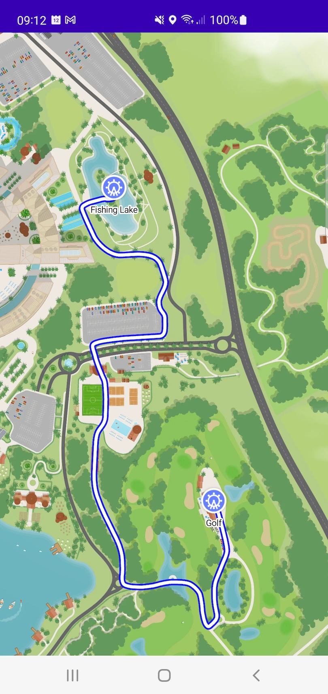

Routes
The Journey API can be utilised to display a route on the map.
A Journey takes as input a from parameter which is of type DestinationProvider, a to parameter which is a list of DestinationProvider objects and an optional Journey.Options parameter.
The most typical use cases are covered below.
A Route from a GeographicCoordinate to a GeographicCoordinate
To display a route between two fixed GeographicCoordinate objects you can create a Journey and add it to the map view as so:
val journey = Journey(
from = DestinationProvider(GeographicCoordinate(52.8983, -1.8494)),
to = listOf(DestinationProvider(GeographicCoordinate(52.8982, -1.8463)))
)
mapView.addJourney(journey)
A Route from a GeographicCoordinate to Multiple GeographicCoordinates
Multiple DestinationProvider objects can be provided in the to parameter. In this case the DestinationProvider which is closest to the from DestinationProvider will be routed to.
val journey = Journey(
from = DestinationProvider(GeographicCoordinate(52.8983, -1.8494)),
to = listOf(
DestinationProvider(GeographicCoordinate(52.8982, -1.8463)),
DestinationProvider(GeographicCoordinate(52.8949, -1.8445))
)
)
mapView.addJourney(journey)
A Route from the User's Current Location to a GeographicCoordinate (or Multiple GeographicCoordinates)
The GoogleLocationId.HighAccuracy, GoogleLocationId.Balanced, GoogleLocationId.Passive objects (see User Location Marker) can be used within the DestinationProvider. This allows you to calculate a route from the user's current location to a destination which will automatically update as the user moves.
val journey = Journey(
from = DestinationProvider(GoogleLocationId.HighAccuracy),
to = listOf(DestinationProvider(GeographicCoordinate(52.8982, -1.8463)))
)
mapView.addJourney(journey)
Journey Options
Journey options can be optionally specified to style the route, listen to changes to the route and provide any route options such as avoidFlags to be accounted for when calculating the route.
Styling the route
The route can be styled by providing a Journey.Options instance to the options parameter when creating a Journey and providing an animatingRouteShaper: (AnimatingRoute) -> AnimatingShapedRoute. In particular Shape objects can be provided and styled using the strokeColor and strokeWidth parameters. The example below shows how to display the route with a red outline and a white fill.
val journey = Journey(
from = DestinationProvider(GeographicCoordinate(52.8983, -1.8494)),
to = listOf(DestinationProvider(GeographicCoordinate(52.8982, -1.8463))),
options = Journey.Options(
animatingRouteShaper = { animatingRoute ->
AnimatingShapedRoute(
animatingRoute = animatingRoute,
shapes = listOf(
Shape(
path = animatingRoute.route.path,
strokeColor = Color.BLUE,
strokeWidth = 4f
),
Shape(
path = animatingRoute.route.path,
strokeColor = Color.WHITE,
strokeWidth = 2f
)
)
)
}
)
)
Listen to changes to the route
By providing a (AnimatingRoute?) -> Unit lambda to the listener parameter you can listen to route updates. For example when using the user's current location as the from parameter you could display (or in this case log) the distance to the destination by using the animatingRoute.route.distance property.
val journey = Journey(
from = DestinationProvider(GoogleLocationId.HighAccuracy),
to = listOf(DestinationProvider(GeographicCoordinate(52.8982, -1.8463))),
options = Journey.Options(
listener = object : (AnimatingRoute?) -> Unit {
override fun invoke(animatingRoute: AnimatingRoute?) {
if (animatingRoute == null) {
Log.d("MapLayrLog", "No route available")
} else {
Log.d("MapLayrLog", "Distance to destination: ${animatingRoute.route.distance}m")
}
}
}
)
)
Route options
A list of flags to avoid when calculating a route can be provided. For example you might wish to calculate a route that avoids uneven terrain.
val journey = Journey(
from = DestinationProvider(GeographicCoordinate(52.8983, -1.8494)),
to = listOf(DestinationProvider(GeographicCoordinate(52.8982, -1.8463))),
options = Journey.Options(
routeOptions = PathNetwork.RouteOptions(avoidFlags = setOf("{my_route_flag_1}"))
)
)
Note: These options can only be used if the path network has been configured to include them
An example of using the Journey API can be found here: ExtendedSampleActivity.kt
